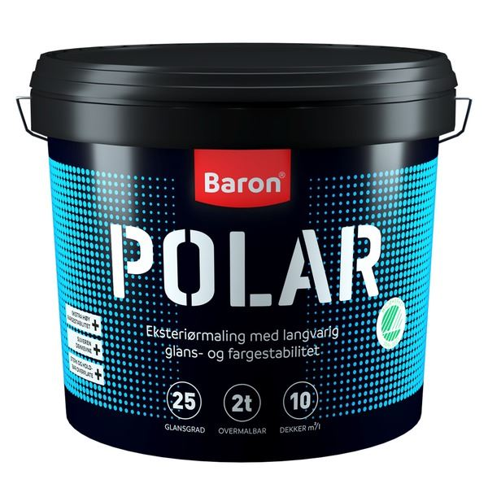
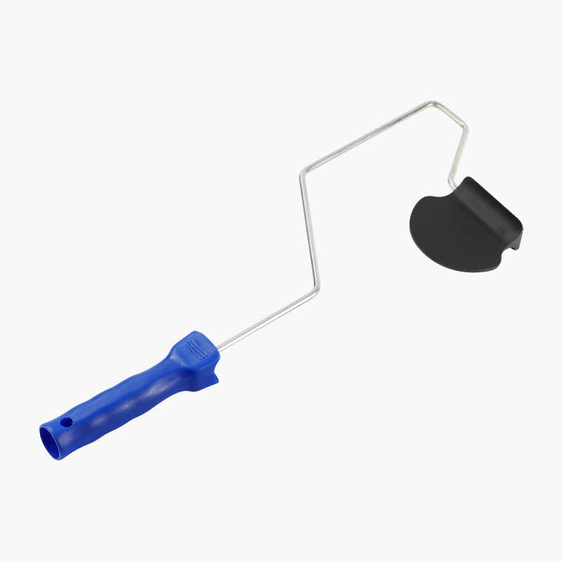

Vedlikehold av hus i regnfullt klima
Som huseier – eller om du vurderer å kjøpe bolig – er det lurt å tenke på
hvordan regnet påvirker bygningen. I områder som Bergen, der nedbøren er en
del av hverdagen, handler det om å beskytte huset mot fukt, råte og sopp.
Her er noen tips for å holde boligen i topp stand:
Maling og overflatebehandling
- Regnet sliter på fasaden, spesielt om huset er kledd i tre.
- Bruk værbestandig maling eller beis som tåler mye nedbør.
- Mal jevnlig – sjekk hvert 5.–7. år, avhengig av kvaliteten på malingen.
- Husk også å behandle vinduskarmer og dører, da de får mye vann på seg.

Sopp- og algebehandling
- I fuktige strøk får man raskt grønske og sopp på vegger og tak.
- Bruk sopp- og algedreper jevnlig på kledning og takstein.
- Høytrykkspyler kan brukes forsiktig, men unngå for hardt trykk på treverk.
- Vurder fasadematerialer som krever mindre vedlikehold, f.eks. skifer eller plater.
Tak og drenering
- Et tett tak og gode takrenner er alfa og omega i et regnfullt klima.
- Rens takrennene minst to ganger i året.
- Sjekk at nedløpsrør leder vannet bort fra huset.
- Sørg for god drenering rundt grunnmuren – det forebygger fuktskader i kjelleren.

Inneklima og ventilasjon
- Når det regner mye, blir det lett fuktig innendørs.
- Bruk luftavfukter i kjeller og våtrom for å hindre mugg.
- Sørg for god ventilasjon og lufting i hele huset.
- Sjekk jevnlig for kondens rundt vinduer.
Smarte investeringer for bergensværet
- Bygg et lite tørkerom eller en gang med plass til regntøy og støvler.
- Monter overbygg over inngangsdøren – praktisk i hverdagen.
- Ha en god utebod som tåler regn, for sykler og sportsutstyr.
I et klima med mye regn er det viktig å tenke langsiktig. Med riktig maling,
godt vedlikehold av tak og drenering, og en god strategi mot fukt, kan huset
ditt stå støtt i mange tiår – selv i Bergen.